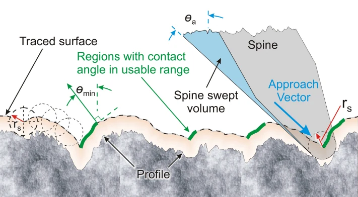

本文目录 · 7 节
一句话精要：微刺是否挂得住，取决于刺尖能够接近并承载的局部微凸体，而不只是表面的平均粗糙度。小刺尖提高找到挂点的机会，局部顺应结构让多个挂点共同分担载荷。
{kind=link}

放大查看 ↗· 论文事实、项目启发与待验证事项分开记录。
机制 / 结构如何把动作变成附着
作者把实测二维表面轮廓转换为微刺扫掠后的可接触轮廓，再结合接近方向、局部法向和加载方向筛选可用挂点。Ra、Rq 描述高度起伏，却不能说明凸起是否有适合钩住的侧面。两种粗糙度接近的砂纸，可能有截然不同的挂持表现。
尺寸缩小会增加可用微凸体数量，但降低单刺强度。论文讨论的平方尺度关系是几何缩放下的趋势，并不意味着只要无限减小刺尖就能无限增大总承载。真实阵列还会出现滑动、跳动和“看起来可挂、实际滑脱”的接触。
项目启发 / 哪些值得迁移
对粗糙面足端，先确定接近轨迹和承载方向，再决定微刺数量与柔顺悬挂。薄板整体能弯曲不等于每根刺都能均载；若几个高点先承重，其余微刺可能始终没有参与。光滑硬面缺少可用凸起，应另选附着机制。
证据 / 参数与测试条件
| 项目 | 原文或精读记录 | 条件与解释 |
|---|---|---|
| 新微刺尖端半径 | 10–15 μm | SpinyBotII 实测；用于理解尺度，不直接作为本项目制造公差 |
| 磨损后尖端半径 | 25–35 μm | 与新刺对照，磨钝会改变可用挂点数量 |
| 典型轴径 | 约 270 μm | Fig. 1 的微刺几何 |
| 承载方向 | 距墙面约 3.5°–8° | 与法向拉脱不同；角度定义不可与接近角混用 |
实验 / 转化为可检查的问题
以下为结合阅读提出的实验建议，尚不代表本项目已完成：
- 在同一砂纸或混凝土上比较刚性固定与局部顺应阵列，记录接合成功次数/总次数、承载力及滑移距离。
- 用相同加载方向比较新刺与磨损刺；失败后检查是刺根塑性变形、弹性转动滑脱，还是表面颗粒破坏。
边界 / 这些结论不能直接外推
二维轮廓不能完整表示三维纹理与倒扣，测量分辨率也会滤掉尖锐细节。单刺静态极限不能直接外推为整机动态栖停能力。
关联阅读 / 沿问题继续读
- Hu2019 — 柔顺基底如何把微刺接触原理做成曲面足端。
- Pope2017 — 把阵列装上飞行器后，还要处理尾部支撑、载荷角和换步。
- Kim2023 — 动态撞壁时，挂点捕获还受反弹与接触持续时间影响。
论文关联地图 · 当前项目记录：光滑面方案仍在筛选，历史干黏附构想不等于已定型方案。
来源 / 阅读记录与原文
整理依据：paperreading：Asbeck2006_微刺阵列、微刺表面接触建模、微刺尺寸权衡与失效模式。